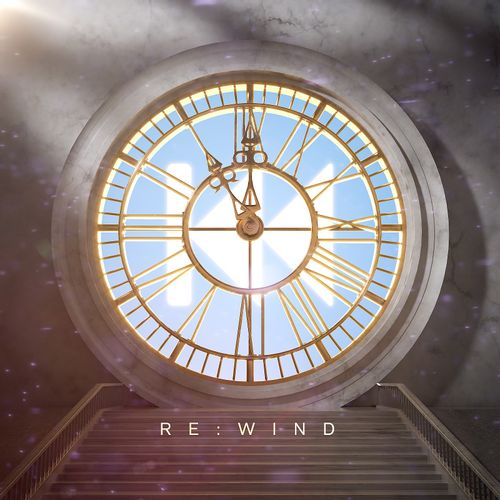

(고세구 사진) 이 사이트는 CSS연습용 사이트입니다.
닉네임 유래
"고양이가 세상을 구한다."의 앞글자를 딴 이름이 고세구이다
소개
트위치에서 방송하는 스트리머이자 버튜버이며 우왁굳이 기획한 걸그룹 이세계 아이돌의 멤버. 주로 저스트 채팅, 게임 방송을 진행하고 있다.
2021년 7월 18일 우왁굳이 진행한 이세계 아이돌 프로젝트에 참여하여 2021년 8월 26일 최종 합격을 한 후 본격적인 스트리머/유튜버 활동을 시작한
버츄얼 아이돌/스트리머이다.
한국에 아직 버츄얼 유튜브 시장이 많이 활성화 되어있지 않은 시점에서
도전한다는 것은 도박수이지만 우왁굳의 도움과 피드백하에 같은 그룹 이세계 아이돌 멤버들과 같이 현재 꾸준한 상승세를 보이며 성장해나가고 있다.
작품활동

RE:WIND(2021)
대표 밈